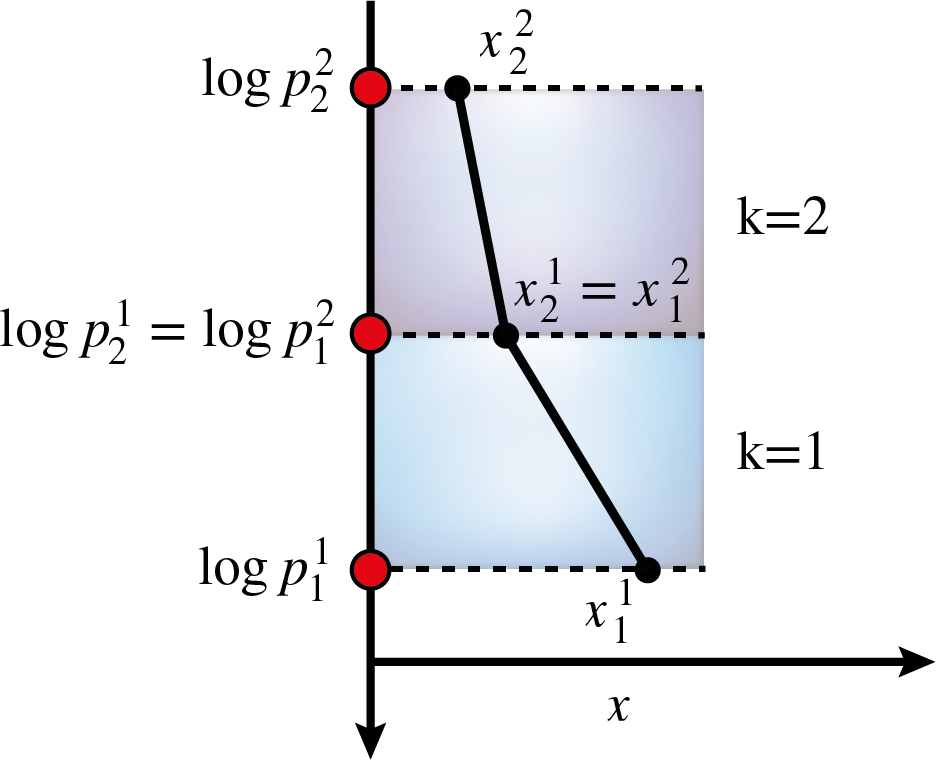
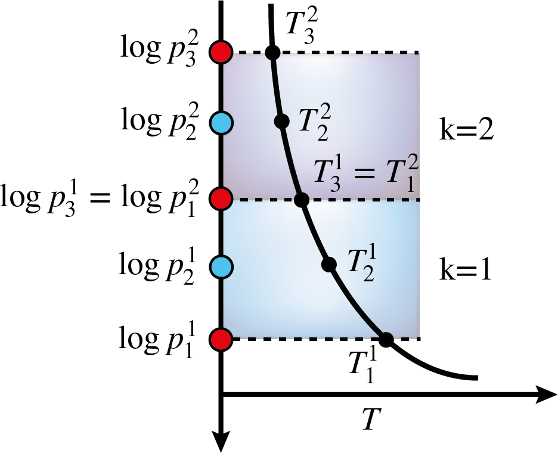

Parametrisations of vertical profiles¶
The chemistry and the temperature structure models both employ the same parametrisations to describe their atmospheric profiles as a function of pressure. This section provides a more detailed description of the different parametrisations that are included in BeAR.
The following parametrisations are available:
isoprofiles
piecewise polynomials
cubic b splines
Isoprofiles¶
Isoprofiles are the most simple but also often used approximation for parametrising vertical profiles in a retrieval. In this approximation, the abundance of a chemical species or the temperature is assumed to be constant throughout the atmosphere.
This yields one free parameter for each chemical species included in the retrieval or for the constant temperature, respectively.
Piecewise polynomials¶
The description of vertically non-constant profiles using piecewise polynomials is based on the idea of finite elements, see Kitzmann et al. (2020) for details. In this parametrisation, the atmosphere is separated into \(K\) elements. This number is usually a user input.
These elements are distributed equidistantly in log-pressure space. An example with two elements is shown in the image below. The superscript numbers refer to the element number, while the subscript ones denote the points inside of an element.
Within each element \(k\), the profle \(x^k\) of a quantity \(x\) as a function of \(\log p\) is then approximated as piecewise polynomial of order \(q\)
where \(l_i\) are the interpolating Lagrange polynomials trough the grid points \(\log p_i^k\). The polynomial degree is also usually a user input. The number of points \(N_p\) inside an element are determined by the chosen polynomial degree:
Thus, for a first-order polynomial as shown above, two points in each element are required that are connected by a straight line. The values of \(x\) at the interface between two elements are forced to be identical to create a continuous profile. In the example above, \(x^1_2\) and \(x^2_1\) have therefore the same value, decreasing the number of free parameters by 1.
The total number of free parameters \(N_x\) for a piecewise, continuous polynomial of degree \(q\) across \(K\) elements is given by
For example, a second-order polynomial across two elements would have 5 free parameters as shown below for a temperature profile \(T(\log p)\).
The additional grid points \(\log p_i^k\) inside an element are again distributed equidistantly in log-pressure space. The free parameters for a retrieval would then be the five temperatures \(T_i^k\) at the discrete points \(\log p_i^k\).
In general, a more complex vertical profile requires either a greater number of elements or a higher polynomial degree. However, the polynomial degree should not be increased too much. Otherwise, the resulting profile might suffer from oscillations, which is commonly referred to as Runge’s phenomenon. It is, therefore, usually better to increase the number of elements to describe a more complex profile rather than the polynomial degree. While BeAR supports polynomial degrees of up to 6, it is highly recommended to not go higher than \(q = 3\) to prevent oscillations in the vertical profile.
Cubic b splines¶
Cubic b splines are very similar to the piecewise polynomial model, in the sense that they also approximate the vertical profiles with polynomials. For a cubic spline, the polynomial degree is obviously 3. However, in contrast to the description with piecewise polynomials discussed above, cubic b splines also put constraints on the derivatives of the profile and force the first and second-order derivative to be continuous as well.
This usually creates a smoother profile compared to low-order piecewise polynomials and also tends to avoid oscillations due to Runge’s phenomenon. However, it should be noted that a more smooth profile is not necessarily more correct. In fact, important information might be smoothed down in the vertical profiles.
BeAR uses the implementation of cubic b splines from the Boost library. As free parameters, BeAR uses the values \(x_i\) of a given quantity, such as mixing ratios of chemical species, located at discrete pressure points \(\log p_i^k\). Like the implementation for the piecewise polynomials, these points are distributed equidistantly in logarithmic pressure space.
The total number of points is usually a user input. Typically, a greater number of points should be used to describe more complex profiles, such as those with inversions. Due to cubic splines being a third-order polynomial and the constraints on the first and second derivative, the minimum number of points to create a cubic b spline is 5.

{kind=link}
{kind=link}